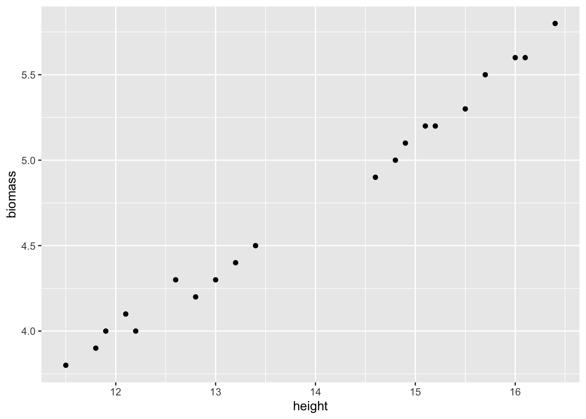
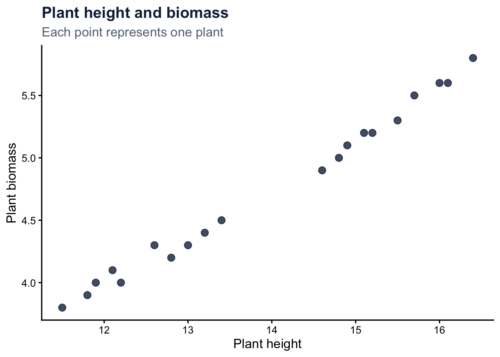
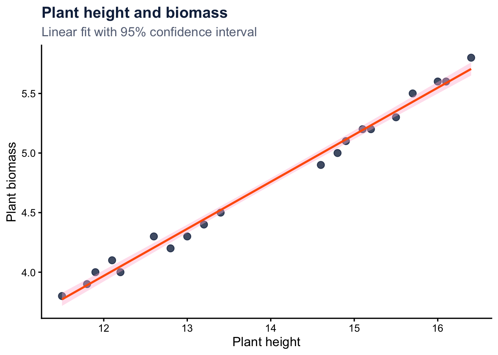
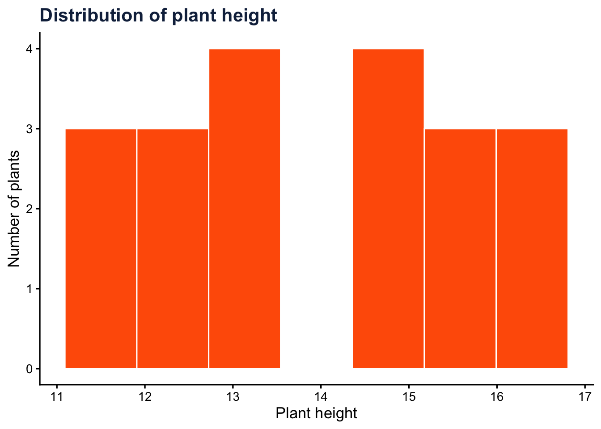
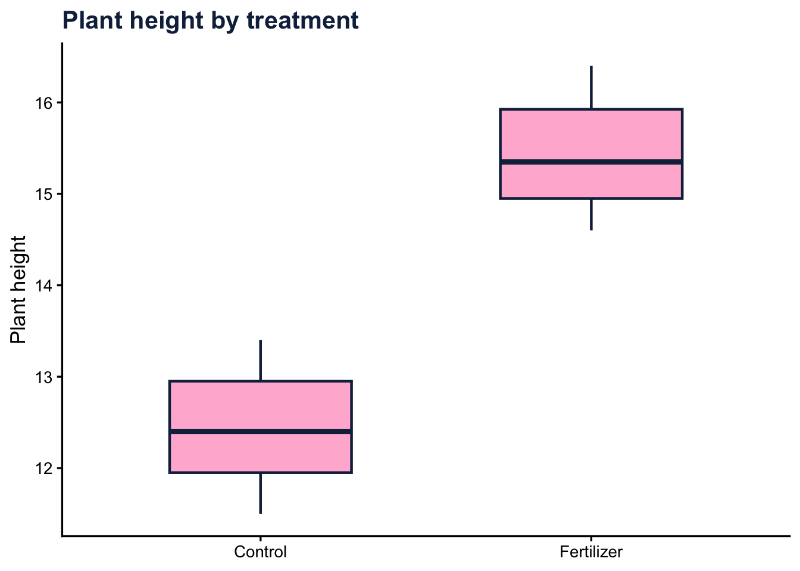
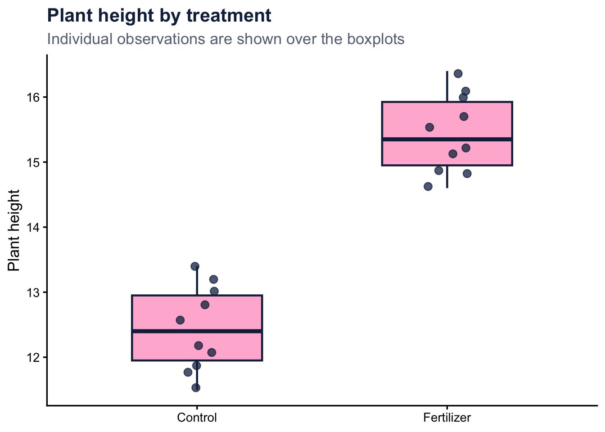
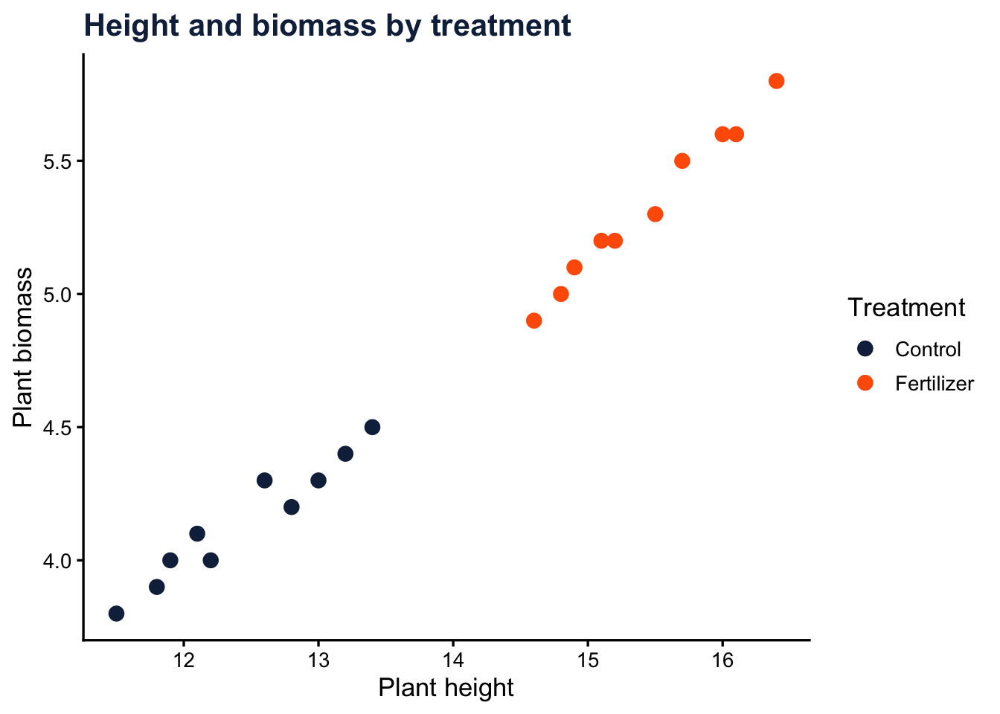
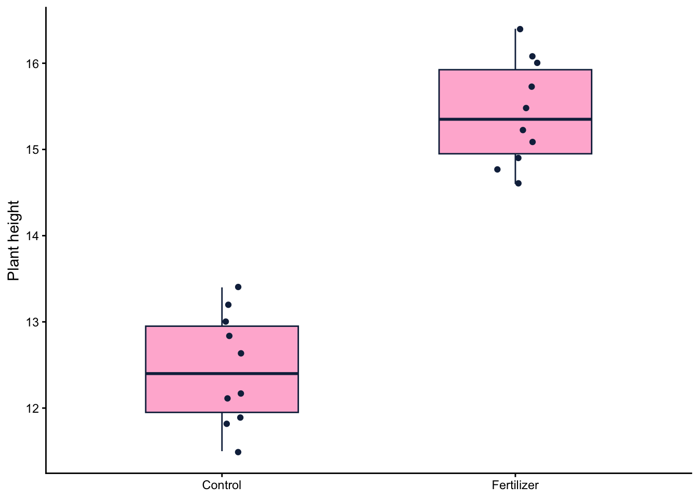
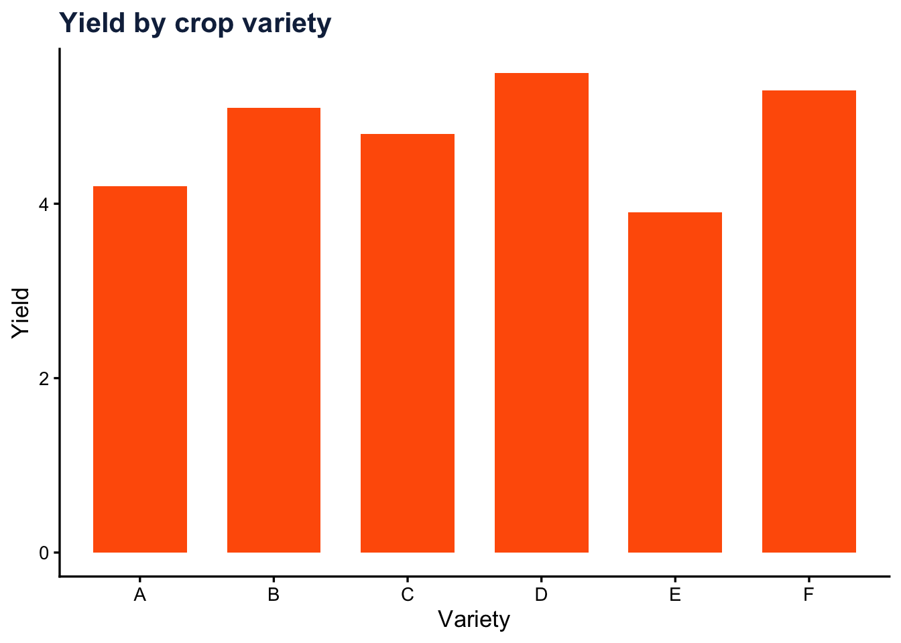

5 * 10[1] 50A practical introduction to working with data and making plots in R
This guide covers the R basics I think are most useful when you’re starting a statistics class: how RStudio is organized, how data are stored, a few functions you’ll use all the time, and how to make your first plots with ggplot2.
You don’t need any previous coding experience.
Beginner level
Statistics focused
ggplot2 included
Where to write code, where R runs it, and where to find your files, plots, and objects.
Objects, vectors, data frames, missing values, and a few basic ways to inspect a dataset.
Means, medians, standard deviations, ranges, and summaries.
The basic structure of ggplot2, plus scatterplots, histograms, and boxplots.
This distinction is useful from the beginning.
R is the language doing the work.
It performs the calculations, fits the models, manipulates the data, and creates the figures.
For example:
mean(height)RStudio is the interface we use to work with R.
It gives us a place to write scripts, run code, view plots, inspect datasets, and organize files.
A simple way to remember it is:
R is the engine; RStudio is the workspace around it.
When you first open RStudio, there are usually four main areas.
The Source pane is where you write and save scripts.
For example, an R script might contain:
height <- c(10, 12, 15, 13, 11)
mean(height)
sd(height)This is where most of your analysis should live.
The Console is where R executes commands.
Try:
5 * 10[1] 50You can type commands directly into the Console, but they are not automatically saved as part of your analysis.
I use the Console for quick checks, but I would not recommend doing an entire homework assignment or analysis there. Put code you want to keep in a script.
The Environment shows the objects currently stored in your R session.
For example:
my_number <- 42After running that line, my_number should appear in the Environment.
The lower-right panel has a few tabs you will use often.
For class work, I recommend creating an RStudio Project for each course or analysis.
Go to:
File → New Project → New Directory → New Project
You might call it:
statistics-classA simple project could look like:
statistics-class/
│
├── data/
│ └── experiment.csv
│
├── figures/
│
├── scripts/
│ └── analysis.R
│
└── statistics-class.RprojUsing a Project helps keep your code and data together and makes it much easier to come back to an analysis later.
It also saves you from file paths like:
/Users/name/Desktop/statistics/final/final2/REAL_final/data.csvAt the simplest level, R can do regular arithmetic.
2 + 2[1] 410 - 5[1] 510 * 5[1] 5010 / 5[1] 2Exponents use ^:
2^3[1] 8And parentheses work the same way they do in regular mathematics:
(10 + 5) * 2[1] 30Compare that with:
10 + 5 * 2[1] 20R follows the usual order of operations.
An object stores something so that we can use it again later.
For example:
x <- 10The <- symbol is the assignment operator.
I usually read:
x <- 10as:
Put
10into an object calledx.
Now we can call that object:
x[1] 10Create another one:
y <- 5and use them together:
x + y[1] 15x * y[1] 50Numbers:
age <- 25Text:
name <- "Maria"Logical values:
student <- TRUETRUE and FALSE are logical values in R. They become especially useful later when we start filtering data.
You can technically call objects almost anything, but meaningful names make code much easier to read.
This:
plant_height <- 15is more informative than:
x <- 15I usually prefer lowercase names separated with underscores:
plant_height
plant_biomass
treatment_group
mean_heightR is case-sensitive.
These are three different names:
height
Height
HEIGHTIf you create height and later type Height, R will not treat them as the same object.
Statistics almost always involves more than one observation.
A vector stores several values of the same general type.
Suppose we measured the height of five plants:
height <- c(
12.1,
11.5,
13.2,
12.8,
11.9
)The c() function means combine.
Run:
height[1] 12.1 11.5 13.2 12.8 11.9and R prints all five values.
Once the measurements are stored in R, we can calculate basic descriptive statistics directly.
mean(height)[1] 12.3median(height)[1] 12.1sd(height)[1] 0.6892024var(height)[1] 0.475min(height)[1] 11.5max(height)[1] 13.2range(height)[1] 11.5 13.2length(height)[1] 5summary(height) Min. 1st Qu. Median Mean 3rd Qu. Max.
11.5 11.9 12.1 12.3 12.8 13.2 summary() is especially useful for getting a quick look at a numeric variable.
Before jumping into a statistical test, spend a little time looking at the data.
At minimum, I usually want to know:
Commands such as:
mean()
sd()
summary()are functions.
A function takes an input and does something with it.
For example:
mean(height)[1] 12.3applies mean() to height.
Functions can also have additional arguments.
round(
mean(height),
digits = 2
)[1] 12.3Here, digits = 2 tells round() to keep two decimal places.
Missing values are common in real datasets.
R represents a missing value as:
NAFor example:
height_missing <- c(
12.1,
11.5,
NA,
12.8,
11.9
)Now try:
mean(height_missing)[1] NAR returns NA.
To calculate the mean using the available observations:
mean(
height_missing,
na.rm = TRUE
)[1] 12.075na.rm = TRUE tells the function to remove missing values before doing the calculation.
Most statistical datasets contain several variables.
In R, one common way to store this type of dataset is a data frame.
A useful way to think about it is:
Rows are observations. Columns are variables.
Let’s create a small plant experiment.
plants <- data.frame(
plant = 1:20,
treatment = rep(
c("Control", "Fertilizer"),
each = 10
),
height = c(
12.1, 11.5, 13.2, 12.8, 11.9,
12.6, 13.4, 12.2, 11.8, 13.0,
15.2, 14.8, 16.1, 15.5, 14.9,
15.7, 16.4, 14.6, 15.1, 16.0
),
biomass = c(
4.1, 3.8, 4.4, 4.2, 4.0,
4.3, 4.5, 4.0, 3.9, 4.3,
5.2, 5.0, 5.6, 5.3, 5.1,
5.5, 5.8, 4.9, 5.2, 5.6
)
)Take a look:
plants plant treatment height biomass
1 1 Control 12.1 4.1
2 2 Control 11.5 3.8
3 3 Control 13.2 4.4
4 4 Control 12.8 4.2
5 5 Control 11.9 4.0
6 6 Control 12.6 4.3
7 7 Control 13.4 4.5
8 8 Control 12.2 4.0
9 9 Control 11.8 3.9
10 10 Control 13.0 4.3
11 11 Fertilizer 15.2 5.2
12 12 Fertilizer 14.8 5.0
13 13 Fertilizer 16.1 5.6
14 14 Fertilizer 15.5 5.3
15 15 Fertilizer 14.9 5.1
16 16 Fertilizer 15.7 5.5
17 17 Fertilizer 16.4 5.8
18 18 Fertilizer 14.6 4.9
19 19 Fertilizer 15.1 5.2
20 20 Fertilizer 16.0 5.6The data frame has 20 observations and four variables:
planttreatmentheightbiomassBefore analyzing a dataset, look at it.
These functions are good starting points.
head(plants) plant treatment height biomass
1 1 Control 12.1 4.1
2 2 Control 11.5 3.8
3 3 Control 13.2 4.4
4 4 Control 12.8 4.2
5 5 Control 11.9 4.0
6 6 Control 12.6 4.3str(plants)'data.frame': 20 obs. of 4 variables:
$ plant : int 1 2 3 4 5 6 7 8 9 10 ...
$ treatment: chr "Control" "Control" "Control" "Control" ...
$ height : num 12.1 11.5 13.2 12.8 11.9 12.6 13.4 12.2 11.8 13 ...
$ biomass : num 4.1 3.8 4.4 4.2 4 4.3 4.5 4 3.9 4.3 ...dim(plants)[1] 20 4names(plants)[1] "plant" "treatment" "height" "biomass" summary(plants) plant treatment height biomass
Min. : 1.00 Length :20 Min. :11.50 Min. :3.800
1st Qu.: 5.75 N.unique : 2 1st Qu.:12.50 1st Qu.:4.175
Median :10.50 N.blank : 0 Median :14.00 Median :4.700
Mean :10.50 Min.nchar: 7 Mean :13.94 Mean :4.735
3rd Qu.:15.25 Max.nchar:10 3rd Qu.:15.28 3rd Qu.:5.225
Max. :20.00 Max. :16.40 Max. :5.800 This is worth doing before fitting any model.
Check that R interpreted your variables the way you expected. A numeric variable accidentally imported as text, for example, can create problems later.
The $ operator lets us access a column from a data frame.
plants$height [1] 12.1 11.5 13.2 12.8 11.9 12.6 13.4 12.2 11.8 13.0 15.2 14.8 16.1 15.5 14.9
[16] 15.7 16.4 14.6 15.1 16.0We can then use that column in a function:
mean(plants$height)[1] 13.94sd(plants$height)[1] 1.645536For biomass:
mean(plants$biomass)[1] 4.735Base R already does a lot, but packages add additional functions.
A few packages that come up frequently in statistics are:
| Package | Common use |
|---|---|
ggplot2 |
Data visualization |
dplyr |
Data manipulation |
tidyr |
Reshaping data |
readr |
Importing data |
lme4 |
Mixed models |
emmeans |
Estimated marginal means |
You generally install a package once.
For example:
install.packages("ggplot2")I normally run installation commands directly in the Console.
Once it is installed:
library(ggplot2)You load the package again when starting a new R session.
A useful distinction:
Install once
install.packages("ggplot2")Load when you use it
library(ggplot2)ggplot2 is one of the most commonly used R packages for data visualization.
At first, its syntax can look a little strange. The key is realizing that a plot is built in layers.
DATA
+
AESTHETICS
+
GEOM
+
LABELS / THEME
The basic structure looks like:
ggplot(
data,
aes(x = ..., y = ...)
) +
geom_...()There are three main pieces.
Which dataset are we using?
ggplot(plants)Which variables should be represented?
aes(
x = height,
y = biomass
)How should those observations be drawn?
For a scatterplot:
geom_point()Put everything together:
ggplot(
plants,
aes(
x = height,
y = biomass
)
) +
geom_point()
A scatterplot is useful when both variables are quantitative.
For example:
Is plant height related to biomass?
ggplot(
plants,
aes(
x = height,
y = biomass
)
) +
geom_point(
size = 3,
alpha = 0.8,
color = "#13294B"
) +
labs(
title = "Plant height and biomass",
subtitle = "Each point represents one plant",
x = "Plant height",
y = "Plant biomass"
) +
theme_classic(
base_size = 13
) +
theme(
plot.title = element_text(
face = "bold",
color = "#13294B"
),
plot.subtitle = element_text(
color = "#667085"
)
)
We can add a fitted linear regression using geom_smooth().
ggplot(
plants,
aes(
x = height,
y = biomass
)
) +
geom_point(
size = 3,
alpha = 0.8,
color = "#13294B"
) +
geom_smooth(
method = "lm",
color = "#FF5F05",
fill = "#FFB7D5",
linewidth = 1
) +
labs(
title = "Plant height and biomass",
subtitle = "Linear fit with 95% confidence interval",
x = "Plant height",
y = "Plant biomass"
) +
theme_classic(
base_size = 13
) +
theme(
plot.title = element_text(
face = "bold",
color = "#13294B"
),
plot.subtitle = element_text(
color = "#667085"
)
)
method = "lm" tells ggplot2 to fit a linear model.
The regression line is useful for visualizing the relationship, but the graph itself is not a substitute for statistical inference.
A formal model could be fit separately with:
lm(
biomass ~ height,
data = plants
)A histogram is useful for looking at the distribution of one quantitative variable.
ggplot(
plants,
aes(x = height)
) +
geom_histogram(
bins = 7,
fill = "#FF5F05",
color = "white",
linewidth = 0.5
) +
labs(
title = "Distribution of plant height",
x = "Plant height",
y = "Number of plants"
) +
theme_classic(
base_size = 13
) +
theme(
plot.title = element_text(
face = "bold",
color = "#13294B"
)
)
A histogram can help us look at:
Suppose the question is:
Does plant height differ between treatment groups?
We have:
treatmentheightA boxplot is a reasonable place to start.
ggplot(
plants,
aes(
x = treatment,
y = height
)
) +
geom_boxplot(
width = 0.55,
fill = "#FFB7D5",
color = "#13294B",
linewidth = 0.8
) +
labs(
title = "Plant height by treatment",
x = NULL,
y = "Plant height"
) +
theme_classic(
base_size = 13
) +
theme(
plot.title = element_text(
face = "bold",
color = "#13294B"
)
)
A boxplot shows the median, quartiles, spread, and potential outliers.
With a small dataset, I usually prefer seeing the individual observations.
We can combine geom_boxplot() and geom_jitter():
ggplot(
plants,
aes(
x = treatment,
y = height
)
) +
geom_boxplot(
width = 0.52,
fill = "#FFB7D5",
color = "#13294B",
linewidth = 0.8,
outlier.shape = NA
) +
geom_jitter(
width = 0.08,
size = 2.7,
alpha = 0.75,
color = "#13294B"
) +
labs(
title = "Plant height by treatment",
subtitle = "Individual observations are shown over the boxplots",
x = NULL,
y = "Plant height"
) +
theme_classic(
base_size = 13
) +
theme(
plot.title = element_text(
face = "bold",
color = "#13294B"
),
plot.subtitle = element_text(
color = "#667085"
)
)
A boxplot summarizes the distribution. The points show you what was actually observed.
With small sample sizes, I find that combination much more informative than a boxplot alone.
Color can also represent a variable.
For example:
ggplot(
plants,
aes(
x = height,
y = biomass,
color = treatment
)
) +
geom_point(
size = 3
) +
scale_color_manual(
values = c(
"Control" = "#13294B",
"Fertilizer" = "#FF5F05"
)
) +
labs(
title = "Height and biomass by treatment",
x = "Plant height",
y = "Plant biomass",
color = "Treatment"
) +
theme_classic(
base_size = 13
) +
theme(
plot.title = element_text(
face = "bold",
color = "#13294B"
)
)
aes()This causes a lot of confusion at first.
If you write:
aes(
color = treatment
)you are telling ggplot2:
Use the variable
treatmentto determine color.
But if you write:
geom_point(
color = "#13294B"
)you are saying:
Make every point this same color.
So a useful rule is:
Inside aes() → a variable controls the visual property.
Outside aes() → you manually set the visual property.
There isn’t one plot that works for every question.
A simple starting point is to identify the types of variables involved.
| Question | Variables | Useful first plot |
|---|---|---|
| What does one continuous variable look like? | Quantitative | Histogram |
| How does a measurement differ between groups? | Categorical + quantitative | Boxplot + raw points |
| Are two quantitative variables related? | Quantitative + quantitative | Scatterplot |
| How many observations are in each group? | Categorical | Bar plot |
| How does a measurement change over time? | Time + quantitative | Line plot |
The statistical question should come first. The graph comes after.
A plot can be stored as an R object.
height_plot <- ggplot(
plants,
aes(
x = treatment,
y = height
)
) +
geom_boxplot(
width = 0.52,
fill = "#FFB7D5",
color = "#13294B",
outlier.shape = NA
) +
geom_jitter(
width = 0.08,
color = "#13294B"
) +
labs(
x = NULL,
y = "Plant height"
) +
theme_classic()
height_plot
Then save it with ggsave():
ggsave(
filename = "figures/plant_height.png",
plot = height_plot,
width = 7,
height = 5,
dpi = 300
)I prefer saving figures through code rather than using the Export button because it makes the output reproducible.
A simple analysis script might look like:
# Load packages
library(ggplot2)
# Import data
plants <- read.csv(
"data/plants.csv"
)
# Look at the data
head(plants)
str(plants)
summary(plants)
# Descriptive statistics
mean(
plants$height,
na.rm = TRUE
)
sd(
plants$height,
na.rm = TRUE
)
# Plot
ggplot(
plants,
aes(
x = treatment,
y = height
)
) +
geom_boxplot() +
geom_jitter(
width = 0.08
) +
theme_classic()Save that in something like:
scripts/01_analysis.RTo run a line from a script:
Command + EnterCtrl + EnterYou can also highlight several lines and run them together.
You do not need to memorize every R function.
For built-in help:
?meanor:
help(mean)You can do the same thing with package functions:
?geom_boxplotBeing able to read function documentation is much more useful than trying to memorize every argument.
object not foundYou may see something like:
Error: object 'Height' not foundCheck:
This will not work:
name <- MariaThis will:
name <- "Maria"could not find functionIf you see:
could not find function "ggplot"you probably need:
library(ggplot2)+Sometimes the Console changes from:
>to:
+That usually means R thinks your command is incomplete.
Common causes are a missing:
)
"
}Press Esc to cancel the command and check the syntax.
Suppose yield was measured for six crop varieties.
| Variety | Yield |
|---|---|
| A | 4.2 |
| B | 5.1 |
| C | 4.8 |
| D | 5.5 |
| E | 3.9 |
| F | 5.3 |
Create the dataset:
yield_data <- data.frame(
variety = c(
"A", "B", "C",
"D", "E", "F"
),
yield = c(
4.2, 5.1, 4.8,
5.5, 3.9, 5.3
)
)Then answer:
yield_data <- data.frame(
variety = c(
"A", "B", "C",
"D", "E", "F"
),
yield = c(
4.2, 5.1, 4.8,
5.5, 3.9, 5.3
)
)
mean(yield_data$yield)[1] 4.8sd(yield_data$yield)[1] 0.6324555max(yield_data$yield)[1] 5.5yield_data[
which.max(yield_data$yield),
] variety yield
4 D 5.5And a quick plot:
ggplot(
yield_data,
aes(
x = variety,
y = yield
)
) +
geom_col(
fill = "#FF5F05",
width = 0.7
) +
labs(
title = "Yield by crop variety",
x = "Variety",
y = "Yield"
) +
theme_classic(
base_size = 13
) +
theme(
plot.title = element_text(
face = "bold",
color = "#13294B"
)
)
mean(x)
median(x)
sd(x)
var(x)
range(x)
summary(x)head(data)
str(data)
dim(data)
names(data)
summary(data)ggplot()
aes()
geom_point()
geom_boxplot()
geom_histogram()
geom_jitter()install.packages()
library()Once these basics feel comfortable, the next useful step is learning how to import and manipulate real datasets.
That usually means getting familiar with functions such as:
read_csv()
select()
filter()
mutate()
arrange()
group_by()
summarise()From there, it becomes much easier to connect the R workflow to methods from a statistics class:
Import the data
↓
Inspect and clean the data
↓
Visualize the data
↓
Calculate descriptive statistics
↓
Choose and fit an appropriate statistical model
↓
Check assumptions
↓
Interpret the results
The goal is not to memorize R syntax. It is to get comfortable enough with R that the code stops getting in the way of the statistics.
Comments
Anything after
#is a comment.R ignores comments when running the script.
Comments are useful for separating steps and documenting decisions.
For example: